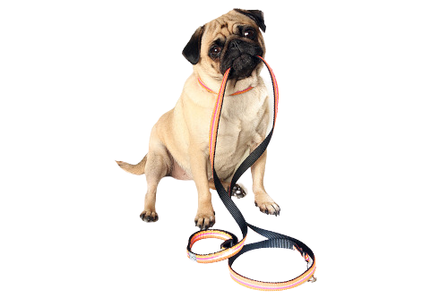

Au, Dog Steps | DogWalker

Au, DogSteps chegou para facilitar sua vida!
Muitas vezes, os donos de animais de estimação têm um estilo de vida agitado e não têm tempo suficiente para garantir que seus cães recebam exercício adequado e passeios regulares. É aí que entra o Au, MyDog, oferecendo seus serviços profissionais para caminhar com os cães e ajudá-los a queimar energia. O dogwalker geralmente tem experiência em lidar com diferentes tipos de cães e sabe como manuseá-los com segurança durante os passeios.
Instagram: @au.dogsteps
Saiba mais: Perguntas frequentes
Veja como são os passeios: